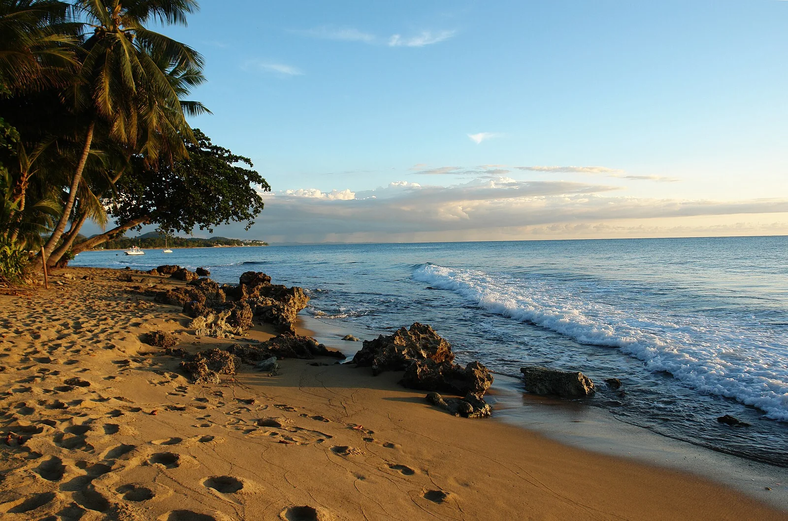

Rincón — Tres Palmas
Porto Rico · surf, snorkeling

La grosse droite des Caraïbes, qui ne se réveille qu’avec les houles d’hiver de l’Atlantique nord. Le spot est aussi une réserve marine de corail corne d’élan.
- Lieu
- Porto Rico
- Niveau
- Expert
- Activités
- surf, snorkeling
- Type d'eau
- Mer / océan
- Coordonnées
- 18.35, -67.27 (position approximative du secteur)
Dangers à connaître
- Ne marche que par grosse houle : puissance élevée.
- Récif de corail vivant, à ne pas toucher.
- Courant de sortie le long du récif.
Le conseil d'Ocean Buddy
Hors houle, c’est un site de snorkeling remarquable : le corail corne d’élan y est protégé.
Ouvrir dans Ocean Buddy Télécharger sur l'App Store
Source : Description historique Ocean Buddy · vérification externe en attente.